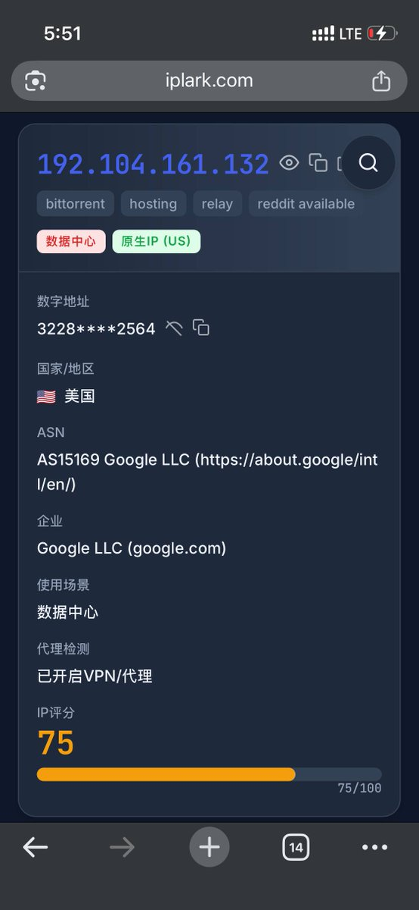
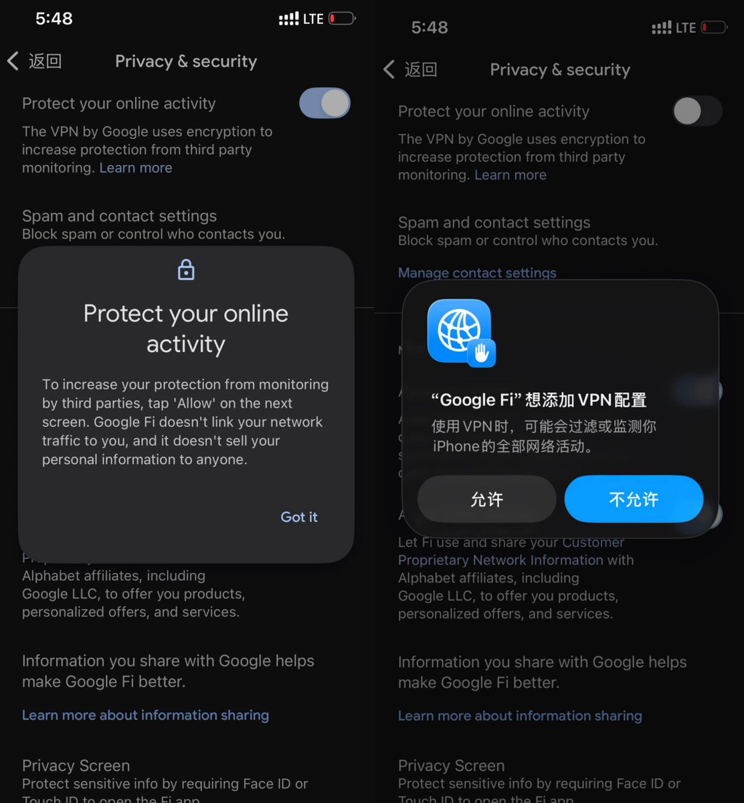
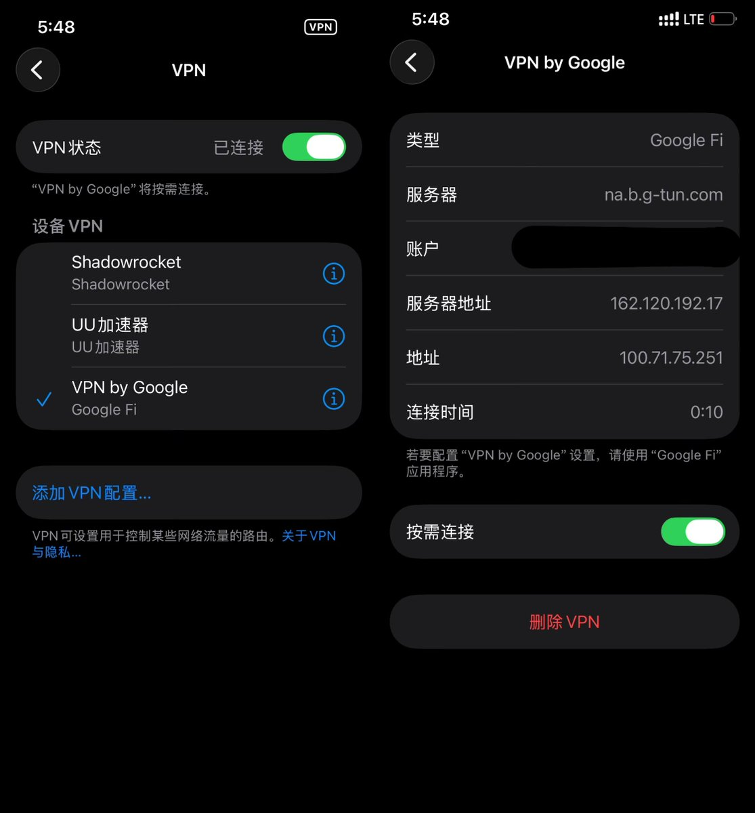

搞不懂营销号吹Pixel自带谷歌VPN 了，又不是Pixel独享搞不懂有啥好吹的，跟没见过世面一样😅
用了那么久Google Fi这玩意从来不开，开了以后IP评分大大降低。
再说了g-tun就是个VPN，非常不好用。谷歌会在你每使用1G流量的后，再次对原始IP进行检测。如果此时检测到你的 IP 不在上述地区了，就会强制断开 VPN 连接。
自己用GCP开个免费VPS每个月200G流量也一样的，有啥稀奇的。
最有用的还得是初代Pixel，还可以给你无损存图片。相比于后续Pixel提供的VPN功能锁区难用，我只觉得这个福利最香，至今我还拿着它备份图片。
用了那么久Google Fi这玩意从来不开，开了以后IP评分大大降低。
再说了g-tun就是个VPN，非常不好用。谷歌会在你每使用1G流量的后，再次对原始IP进行检测。如果此时检测到你的 IP 不在上述地区了，就会强制断开 VPN 连接。
自己用GCP开个免费VPS每个月200G流量也一样的，有啥稀奇的。
最有用的还得是初代Pixel，还可以给你无损存图片。相比于后续Pixel提供的VPN功能锁区难用，我只觉得这个福利最香，至今我还拿着它备份图片。


